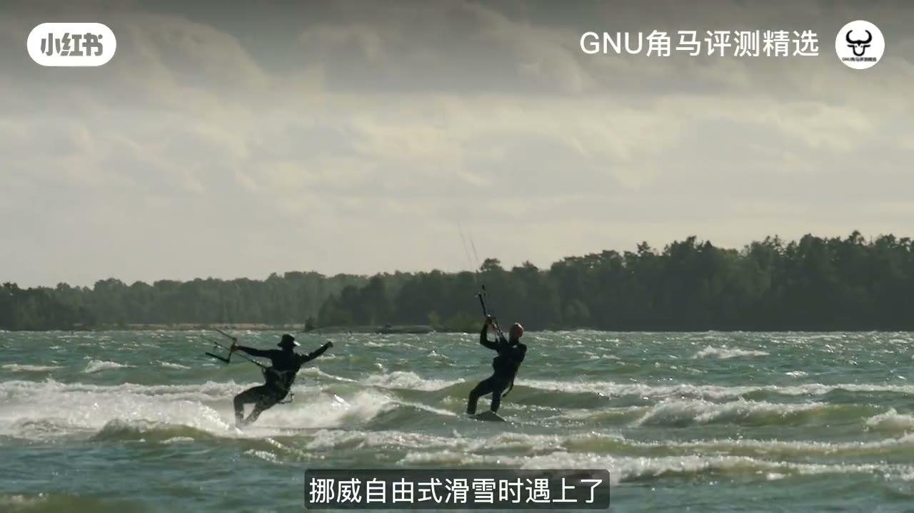
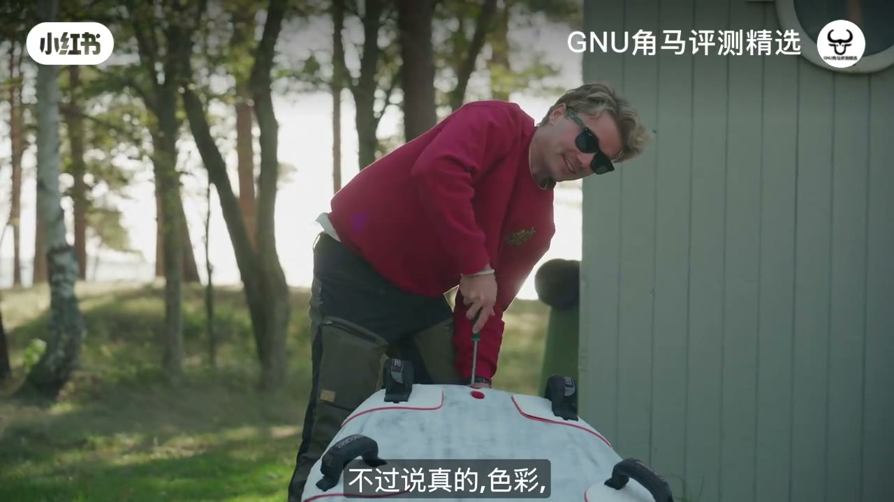
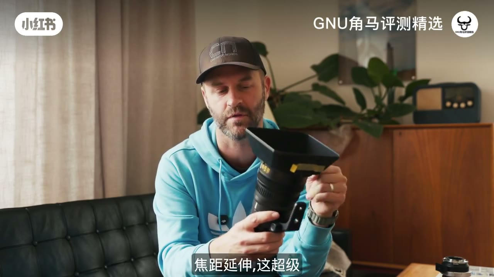
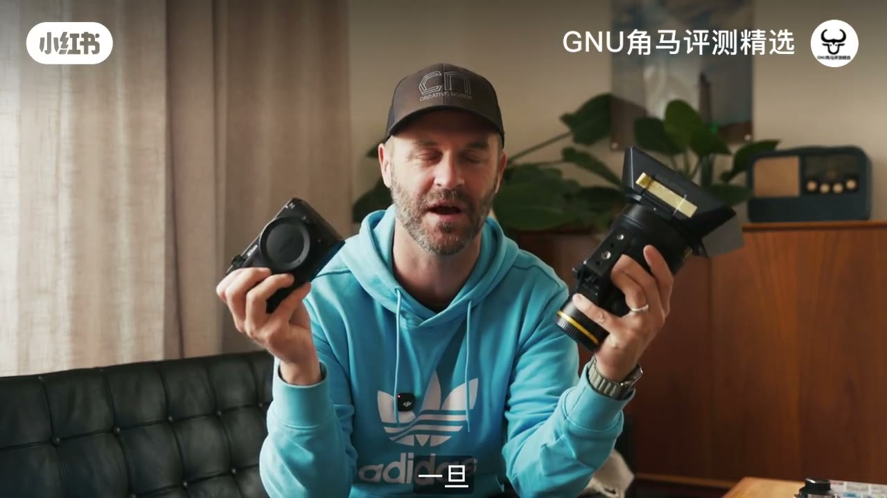

内容要点
RED 用户借测尼康 ZR：色彩接近 Komodo、内录 R3D/IBIS/4K120 很有拍摄欲；高光 DR、不可翻转挡线、缺失 RED 工具是硬伤；28–135+Z 转接是惊喜。潜力大，但未一键替代 RED。
知识结构
要现代功能的 RED 用户如何选。
只吃 R3D；拍得开心是核心。
缺工具；大屏挡 USB-C/麦线。
高光略弱；28–135+DX+Z 转接香。
有潜力，未完全替代。
当灵感/现代功能机很强；搬家替代 RED 还看工具链与高光。
00:00–02:10RED 用户的 2026 选择题
作者是 RED 用户：爱色彩，但 2026 年还要现代功能、可靠性与保修内体验。选项可以是 Komodo X、V-Raptor，或这台尼康 ZR。借测后第一印象：色彩存在感在，接近 Komodo，不如 Dragon 有机，但已经够近——客户未必挑得出。
02:10–04:00只吃 R3D + 拍得开心
对「次级编码」兴趣不大：买法拉利不会只开二挡——他要的是 R3D 内录吃满。挂上 28–135 当休闲机，配合 IBIS 与机内 RAW，关键感受是「有趣到想多拍」；对比当年 5D + Magic Lantern 的启蒙感，ZR 像官方做出来的 2026 版那股劲。
04:00–07:30RED 味影像，缺 RED 工具
作为 RED 枪手：影像表现靠拢 RED，但 DSMC 熟悉的那套工具不在机上；幸好有 App 补回部分工作流。大卖点是 R3D + 大屏，但作者希望可翻转——现状会挡 USB-C 与麦克风供电线，不如自家 S1H 铰链清爽。

07:30–10:00海边实拍与 28–135 惊喜
高光动态范围略吃亏（浪尖高光）；自动跟焦大致可用。颜色与 4K120 RAW 是加分。回到棚内最大惊喜反而是 Nikkor 28–135：电动变焦顺滑，再加 DX 裁切等于多一段「长焦」，跑动取材很方便。Z 卡口转接（如到 E、再接 PL）几乎通吃镜头库——这是佳能用户也会眼红的生态。


10:00–11:13能替代 RED 吗？
结论：ZR + 28–135 是有真正潜力的组合；固件再强化后作者想再测。它提供现代功能与创作欲，但还没补齐 RED 用户习惯的工具与高光余量——更像「很强的借力新机」，不是一键搬家替代整套 RED。

完整转录（325段）
Whisper medium · 中文 · 已做术语校正，仍可能有识别误差。
大家好,今天我们正在拍摄Nikon ZR
一部相机,它有一个很精彩的画面
但是它有很多困扰
所以我们一起来看看
如果你像我一样,你拍摄在红色
你喜欢颜色
但现在是2026年,我们想要一些
有现代的特色,有信用性
而那是免费的
那么你的选择是
或者是Komodo X
或者是V Raptor
或者是这个小家伙
就在这里
我必须说
我最初的印象是
这部相机绝对是存在的
现在它跟我的红色Dragon一样吗
不太一样
但是我们非常接近
它跟我的Komodo差不多
但就差不多
但是它跟我的红色相机一样
它跟我的红色相机一样
它跟我的红色相机一样
它跟我的红色相机一样
它跟我的红色相机一样
我认为你会更多拍摄
你的客户也会很感兴趣
就像你拍摄Dragon
或者Komodo
或者是V Raptor
在我第一次拍摄
我心想
你知道吗
我可能不应该买一部相机
就因为我看到它在YouTube
我现在有一个大小的频道
我可能可以拿出一些相机
来拍摄一部相机
所以我联络了Nikon
不是其他地方
问我能不能买一部相机
测试它
他们很开心地
只要给我一部
他们并没有要求任何东西
他们只要给我一部
所以我应该可以说
我想要的什么
我会买的
请注意
我非常考虑买一部相机
但从我得到的机会
去买一部相机
我决定要把它拆掉
给自己一个意见
然后再做一个个人选择
然后再做一个个人选择
虽然我已经在这段时间
在这次CR中
我们没有新的
公布的相机更新
所以我没有试过
Nikon RAW和H.264 Codex
因为我实际上
不觉得它有那么有趣
因为如果你买了一部Ferrari
你不想只买第二和第一阶
你只想要使用
所有引擎的表现
就像是R3D
你只要买一个Ferrari
你只要买一个Ferrari
你只要买一个Ferrari
R3D和H.264 Codex
是唯一我对它有兴趣的
我正在上班
我几个小时后
我心想
让我们停止今天
所以我跳上了Ferrari
然后把Nikon CR
当作一部休闲摄影机
然后用那大量的20-135
它表现得非常好
像这个样子的拍摄
现在
我会不会比较喜欢
Sigma Contemporary Primes
当然
但我必须做到
我认为它表现得非常好
过去我使用了相机
像是Canon R8
或是Panasonic S9
我认为它们都够好
它们都有它的缺点
但这就是我最喜欢的地方
我们有IBIS
我们有漂亮的内部Raw
这部相机的最重要之处
是它们非常有趣
非常有趣地使用
这会让我想要拍摄它
我是一位年轻人
我开始了我的工作
在摄影学院
在摄影学院
用了Canon 5D Mark II
用了这部相机
我得到选择
装上Magic Lantern
这就是我
我的年轻朋友
我觉得这是什么
我认为Nikon有这部相机
刚刚在他们买了Red
有些人从市场部门
跑到R&D部门
说
你们知道我们正在工作的相机吗
我们可以把RedMagic插进去吗
在那部相机上
我们正在
跟Sony CVE1相比
这就是这部相机的感觉
这部相机感觉像是
一部Majic Lantern的相机
但它是2026年
是一个公司制造的相机
由制造者来看
因为
我作为一名Red Shooter
我发现这部相机
有很多工具
我从来都不依赖
最大的DSMC1和2相机
还有Komodo
我猜这部相机是DSMC3
但这部相机不在这里
这部相机感觉像是
一部Nikon相机
它是一部Red相机的
照片表现
但它没有所有工具
我们Red用户喜欢的工具
幸好
这部相机有一个应用程式
所以你能拿到
很多我们喜欢的工具
和Red的
环境
在这里
这是很棒的
如果你在这里
你应该有看过很多评论
我可以告诉你
这部相机的主角
是Red RAW和大屏幕
我是否希望它是
一个偏向的偏向屏幕
是的
因为
如果你是在这部相机上
你可能会想要
使用I.O和大屏幕
但因为这部相机
是用USB-C和麦克风电源
当它偏向
这不太合适
我会想要
拿到一些相机的空间
和我的Panasonic S1H
一起使用
因为它在2019年推出了
各位
我现在在海边
我在拍摄Pocket 4P
我正在尝试拍摄
ZR
和我的朋友
他们正在外面
我们正在骑车
让你们出去
看看我们会不会骑
和Nikon ZR的骑车
这是我的朋友Thomas
他对我来说是很大的启发
他和另一位朋友
在纽约的自由滑雪
当他们被捕
在一阵震惊
他们基本上没有目的
在路上
他们偶尔滑雪了
他们的滑雪是30米的跌倒
其中一位被捕
多次被捕
而且受到大量的伤害
但现在他们在海边
滑雪了
这对所有我们本地的骑车人士
也是很大的启发
在海边看到他们
好的
一些感觉
ZR如何表现
我拍摄了很多
不同的镜头
我认为
ZR已经得到了
很大的启发
从没有那么大的
动力范围
你可以看到
在拍摄的高光和波浪
在非常非常后面的镜头
但整体来说
这对我非常感到惊喜
自动控制
也跟我的R3一样
可能R3
有点黏黏的
但绝对不是太黏黏的
但天啊
颜色
和我们获得4K120
在Raw上
有红色的科技
绝对是大量的
回到录影室
好的
这就是我获得最大的惊喜
这是Nikkor 28-135
超广角镜头
我心想
超广角镜头
要怎么做
但结果
非常方便
告诉你
这是我非常惊喜的
非常有趣的一件事
我拍摄了滑雪
我拍摄了滑雪
拍摄的镜头非常顺滑
我还拍摄了一些
我工作的公司的
拍摄的广角镜头
这是非常有趣的一件事
特别是因为
我们获得了DXCrop
在CR上
所以我们可以
拍摄超广角镜头
我们获得了更多的
广角镜头
这是非常非常有用
和方便
这是一个很大的惊喜
这镜头非常有趣
我希望这镜头是Nikkor 24-270
当然
或者是Nikkor Samyang 2-2.8
Nikkor 35-150
我获得的
Panasonic S1H
当然
但这镜头看起来
非常有趣
颜色非常非常好
而且很精致
很奇怪
我刚刚获得的镜头
这镜头是非常推荐的
如果你是这类型的摄影师
另一件很大的问题
在CR上
是在Z Mount上
你能够适应到几乎任何东西
所以这里我拥有
Z Mount到Sony E Mount
然后PL Mount到E Mount
所以适应性
就在这里
这是我
你知不知道
作为一个Canon摄影师
我拥有EF和RF镜头
从Canon
特别是在Full Frame上
就像R5 Mark II
而且我觉得
在CR上
世界上
是我的镜头监督
如果你愿意说
这里有这么多镜头
我能够适应
这个人
这是Nikkor Ecosystem
最大的强项
所以
这是我非常缺乏的
作为Canon摄影师
能够拥有更多的选择
对于镜头而言
好 大家
这就是Nikon CR
和Nikkor 28-135
我觉得这是一个
有真正的潜质的产品
一旦我们有更强项的更强项
我不能等待再次尝试
我们有了它
如果我没有回答你
来看这支影片的问题
请在下面留言
我会尝试回答
在留言中
那就是这里
希望大家享受这支影片
我会在下一个影片见
再见